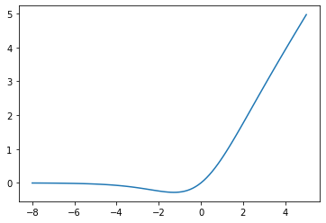
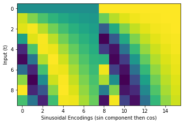

Code
swish = Swish()
x = torch.linspace(-8, 5, 100)
y = swish(x)
plt.plot(x, y)
plt.show()
This section defines the different building blocks we’ll use to build the core unet and discriminator architectures.
By default this all uses the Swish activation function: \(x \cdot \sigma(x)\)
Swish ()
swish…
You can think of this as ‘fancy ReLU’… This is what it looks like:
Next, we want a way to create embeddings from various conditioning information.
TimeEmbedding (n_channels:int, denom_factor=10000)
Embeddings for \(t\)
The Positional Embedding used for TimeEmbedding is a sinusoidal embedding as used in many transformer implementations: \[
\begin{align}
PE^{(1)}_{t,i} &= sin\Bigg(\frac{t}{10000^{\frac{i}{d - 1}}}\Bigg) \\
PE^{(2)}_{t,i} &= cos\Bigg(\frac{t}{10000^{\frac{i}{d - 1}}}\Bigg)
\end{align}
\]
where \(d\) is half_dim = n_channels//8
Since we expect to encode only a small number of steps we can specify a smaller multiplier than 10000 using the denom_factor argument.
These sinusoidal embeddings are usually then passed through an MLP to transform them into n_channels outputs, but we can pass in return_sinusoidal_embs=True to get the raw sinusoidal embeddings for visualization purposes. Here’s an example visualizing this for t in range(0, 10):

We also create embeddings to map a latent variable z and our CLOOB embedding to set numbers of channels. Both simply run the input through a small MLP to map them to n_channels outputs.
ZEmbedding (z_dim:int, n_channels:int)
Embedding to map a latent z (z_dim dimensions) to n_channels via an MLP
CLOOBEmbedding (n_channels:int)
Embedding to map a CLOOB embedding (512 dimensions) to n_channels via an MLP
The rest of the building blocks are fairly standard, but all here take both an input (x) and some conditioning (cond).
Downsample (n_channels)
Upsample (n_channels)
MiddleBlock (n_channels:int, n_cond_channels:int)
It combines a ResidualBlock, AttentionBlock, followed by another ResidualBlock. This block is applied at the lowest resolution of the U-Net.
UpBlock (in_channels:int, out_channels:int, n_cond_channels:int, has_attn:bool)
This combines ResidualBlock and AttentionBlock. These are used in the second half of U-Net at each resolution.
DownBlock (in_channels:int, out_channels:int, time_channels:int, has_attn:bool)
This combines ResidualBlock and AttentionBlock. These are used in the first half of U-Net at each resolution.
AttentionBlock (n_channels:int, n_heads:int=1, d_k:int=None, n_groups:int=32)
This is similar to transformer multi-head attention.
ResidualBlock (in_channels:int, out_channels:int, n_cond_channels:int, n_groups:int=32)
A residual block has two convolution layers with group normalization. Each resolution is processed with two residual blocks.
This is what we’ve been building up to. We want a UNet mode that can take in a (noisy) image or image-like tensor, along with some conditioning information (timestep, CLOOB embedding) and optionally a latent z, and produce an output of the same shape as the input.
UNet (image_channels:int=3, n_channels:int=64, ch_mults:Union[Tuple[int,...],List[int]]=(1, 2, 2, 4), is_attn:Union[Tuple[bool,...],List[int]]=(False, False, True, True), n_blocks:int=2, use_z=True, z_dim:int=8, n_z_channels:int=16, use_cloob=True, n_cloob_channels:int=256, n_time_channels:int=-1, denom_factor:int=100)
Hopefully flexible enough :) Arguments:
* `image_channels` is the number of channels in the image. $3$ for RGB.
* `n_channels` is number of channels in the initial feature map that we transform the image into
* `ch_mults` is the list of channel numbers at each resolution. The number of channels is `ch_mults[i] * n_channels`
* `is_attn` is a list of booleans that indicate whether to use attention at each resolution
* `n_blocks` is the number of `UpDownBlocks` at each resolution
* `use_z`=True. Set to false if you don't want to include the latent z input
* `z_dim` is the dimension of the latent `z`, and `n_z_channels` is the size of the embedding used for it.
* `use_cloob` = True. Set to false if you don't want to use CLOOB conditioning.
* `n_cloob_channels` - the size of the embedding used for the CLOOB conditioning input.
* `n_time_channels` - the size of the time embedding. If -1, this is set to n_channels*4
* `denom_factor` for the TimeEmbedding. 100 by default, set to 10,000 if wanting to do more traditional diffusion stuff where n_steps is high.We’d also like a Discriminator that can take in an image, with the same optional conditioning information, and spit out a classification (real or fake). If you want to condition the discriminator on another image (e.g. in DDG the discriminator takes in \(x_{t-1}\) and is conditioned on \(x_t\)) then simply concatenate them together and use image_channels = 2*[the number of channels in a single image].
Discriminator (image_channels:int=3, n_channels:int=64, ch_mults:Union[Tuple[int,...],List[int]]=(1, 2, 2, 4), is_attn:Union[Tuple[bool,...],List[int]]=(False, False, True, True), n_blocks:int=2, use_cloob=True, n_cloob_channels:int=256, n_time_channels:int=-1, denom_factor:int=100)
Based on the same architecture as the UNet, but without the upwards half. Arguments:
* `image_channels` is the number of channels in the image. $3$ for RGB.
* `n_channels` is number of channels in the initial feature map that we transform the image into
* `ch_mults` is the list of channel numbers at each resolution. The number of channels is `ch_mults[i] * n_channels`
* `is_attn` is a list of booleans that indicate whether to use attention at each resolution
* `n_blocks` is the number of `UpDownBlocks` at each resolution
* `use_cloob` = True. Set to false if you don't want to use CLOOB conditioning.
* `n_cloob_channels` - the size of the embedding used for the CLOOB conditioning input.
* `n_time_channels` - the size of the time embedding. If -1, this is set to n_channels*4
* `denom_factor` for the TimeEmbedding. 100 by default, set to 10,000 if wanting to do more traditional diffusion stuff where n_steps is high.Let’s see both in action:
device = 'cpu'
unet = UNet(image_channels=4).to(device)
z = torch.randn((1,8), device=device)
c = torch.zeros((1,512), device=device)
x = torch.randn(1, 4, 16, 16).to(device)
t = torch.tensor(3, dtype=torch.long).unsqueeze(0).to(device)
pred_im = unet(x.float(), t, c, z)
x.shape, pred_im.shape(torch.Size([1, 4, 16, 16]), torch.Size([1, 4, 16, 16]))